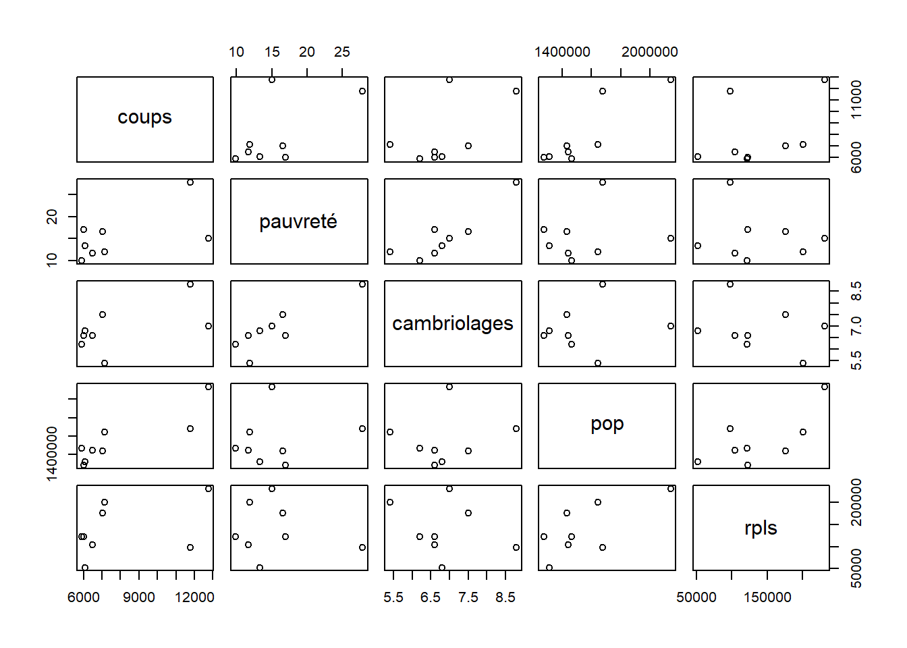
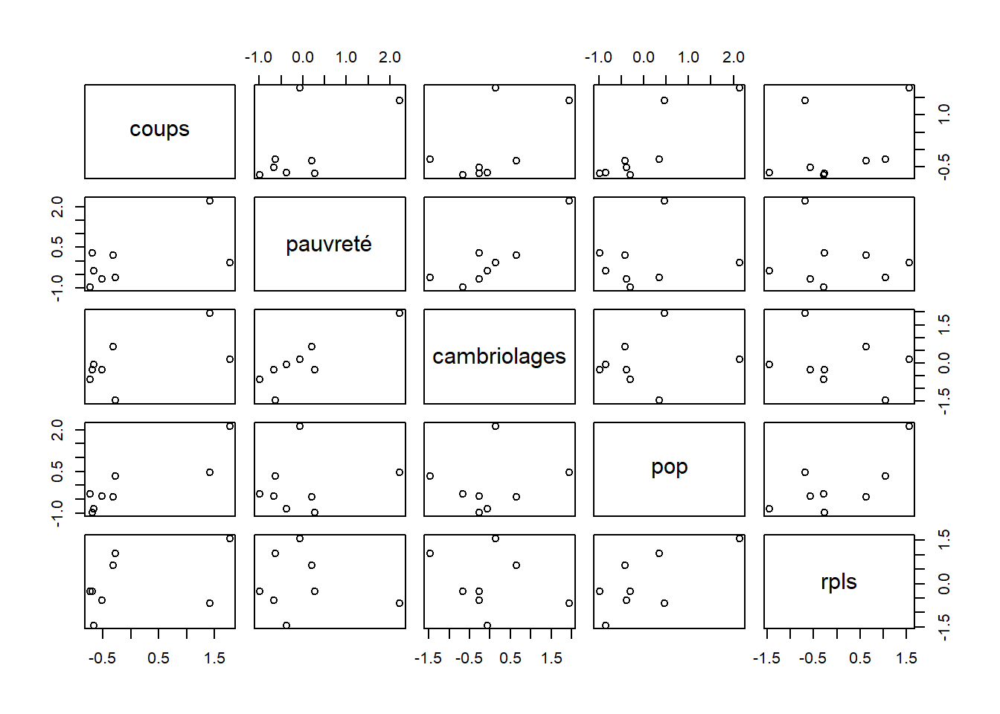
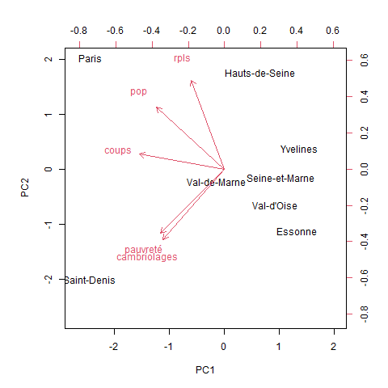
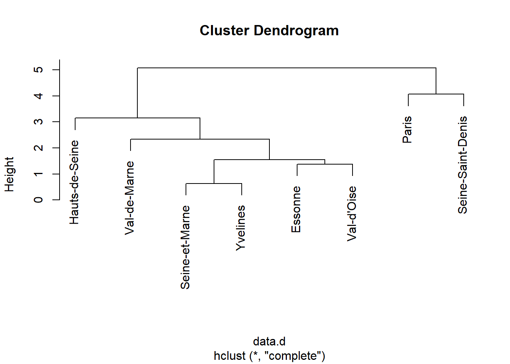
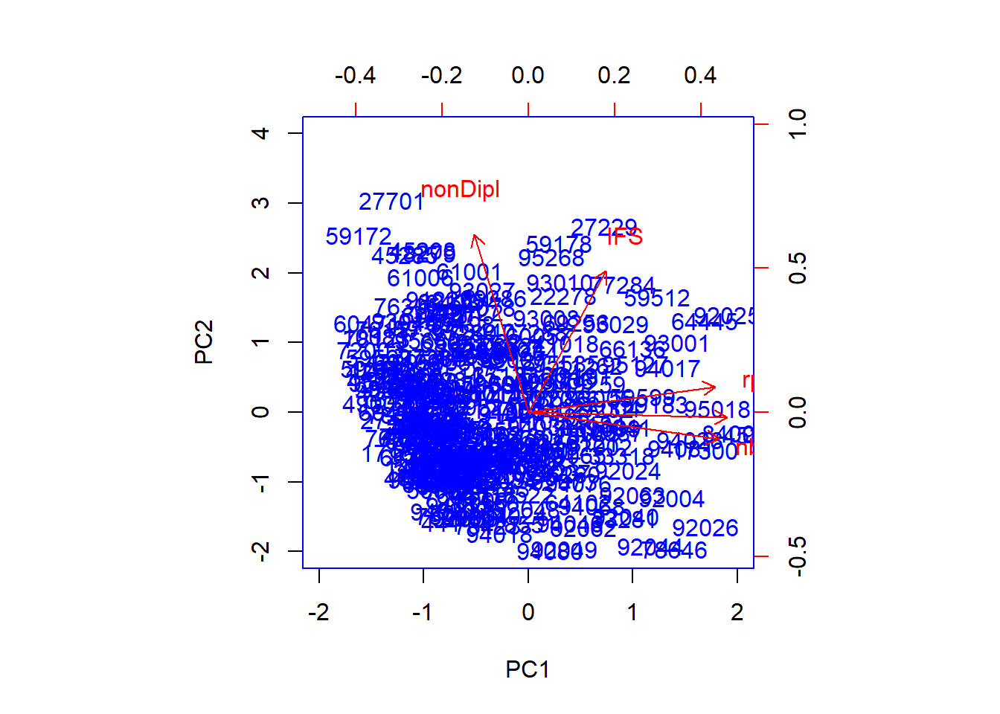
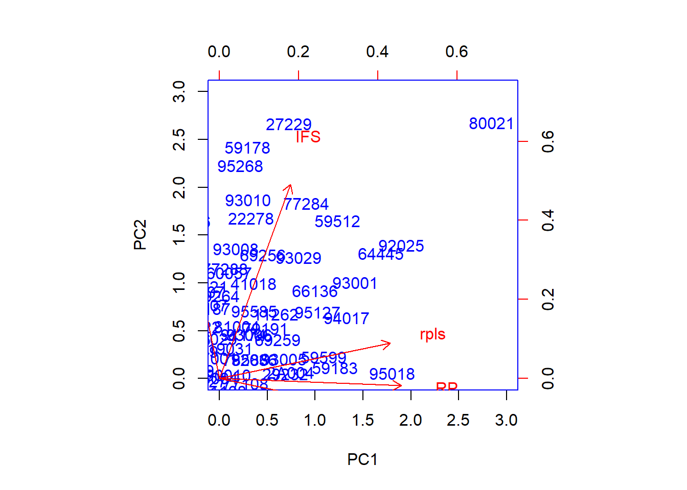
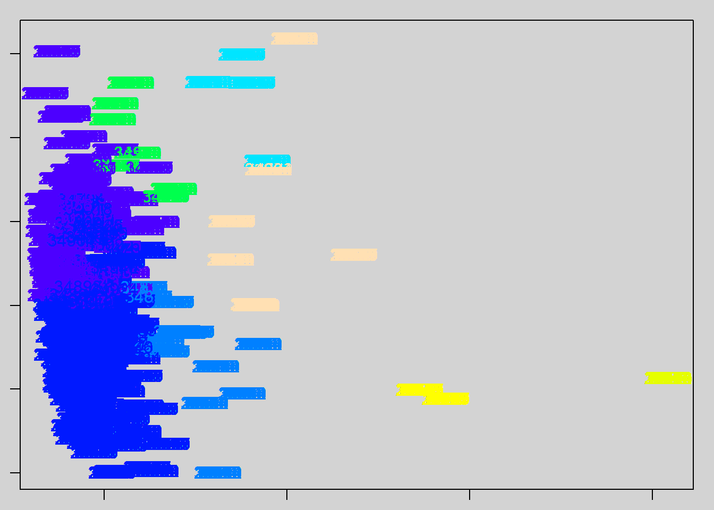

Point final
1 Travail sur criminalité et RPLS
data <- read.csv("data/ines.csv", dec = ",")
names(data)## [1] "Code"
## [2] "LibellÃ."
## [3] "Coups.et.blessures.volontaires..en.nombre..2021"
## [4] "Taux.de.pauvretÃ..2019"
## [5] "Cambriolages.de.logement..taux..2021"
## [6] "Estimations.de.population.2022"
## [7] "Nombre.de.logements.sociaux.par.dÃ.partement"rownames(data)<- data [,2]
data <- data [, c(3:7)]
names(data) <- c("coups", "pauvreté", "cambriolages", "pop", "rpls")
pairs(data)
data_cr <- scale (data)
pairs(data_cr)
acp <- prcomp(data_cr, scale = F)
png("img/biplotPrcomp.png")
biplot(acp, scale = 0)
dev.off()## png
## 2
# matrice des distances entre les individus
data.d <- dist(data_cr)
# classification
cah <- hclust(data.d)
plot(cah)
# découpage
groupes.cah <- cutree(cah, k = 3)
liste <- sort(groupes.cah)
acp <- princomp(data_cr, cor = F, scores = T)
png("img/biplotPrincomp.png")
par(bg = "lightgrey", mar = c(1,1,1,1))
plot(acp$scores[,1],acp$scores[,2], type = "p")
text(acp$scores[,1],acp$scores[,2],col=c(topo.colors(3))[groupes.cah],cex
=1,labels=rownames(data))
dev.off()## png
## 2
2 Quelques ajouts
2.1 Problème des NA
Selon les données choisies, les NA vont être sous la forme “N/A” ou “N/A - résultat non disponible” ou “N/A- résultatnondisponible” etc…
data <- read.csv('data/pbNA.csv', fileEncoding = "UTF-8", dec = ".")
str(data)## 'data.frame': 34955 obs. of 6 variables:
## $ Code : chr "1001" "1002" "1004" "1005" ...
## $ Libcom : chr "L'Abergement-Clémenciat" "L'Abergement-de-Varey" "Ambérieu-en-Bugey" "Ambérieux-en-Dombes" ...
## $ fammilles.monoparentales : chr "15" "5" "658" "34" ...
## $ residences.principales.surroccupées: chr "0" "5" "3.2" "1.4" ...
## $ IFS : int 0 0 1 0 0 0 0 0 0 0 ...
## $ taille.menages : chr "2.46" "2.42" "2.06" "2.42" ...# Cela ne fonctionne pas, il faut des numériques, on fait une recherche autour du motif N/A
i <- grep("N/A", data$taille.menages)
data [i,]## Code Libcom fammilles.monoparentales
## 20047 55039 Beaumont-en-Verdunois 0
## 20058 55050 Bezonvaux 0
## 20133 55139 Cumières-le-Mort-Homme 0
## 20176 55189 Fleury-devant-Douaumont 0
## 20213 55239 Haumont-près-Samogneux 0
## 20272 55307 Louvemont-Côte-du-Poivre 0
## 34939 97601 Acoua N/A - résultat non disponible
## 34940 97602 Bandraboua N/A - résultat non disponible
## 34941 97603 Bandrele N/A - résultat non disponible
## 34942 97604 Bouéni N/A - résultat non disponible
## 34943 97605 Chiconi N/A - résultat non disponible
## 34944 97606 Chirongui N/A - résultat non disponible
## 34945 97607 Dembeni N/A - résultat non disponible
## 34946 97608 Dzaoudzi N/A - résultat non disponible
## 34947 97609 Kani-Kéli N/A - résultat non disponible
## 34948 97610 Koungou N/A - résultat non disponible
## 34949 97611 Mamoudzou N/A - résultat non disponible
## 34950 97612 Mtsamboro N/A - résultat non disponible
## 34951 97613 M'Tsangamouji N/A - résultat non disponible
## 34952 97614 Ouangani N/A - résultat non disponible
## 34953 97615 Pamandzi N/A - résultat non disponible
## 34954 97616 Sada N/A - résultat non disponible
## 34955 97617 Tsingoni N/A - résultat non disponible
## residences.principales.surroccupées IFS taille.menages
## 20047 N/A - division par 0 0 N/A - division par 0
## 20058 N/A - division par 0 0 N/A - division par 0
## 20133 N/A - division par 0 0 N/A - division par 0
## 20176 N/A - division par 0 0 N/A - division par 0
## 20213 N/A - division par 0 0 N/A - division par 0
## 20272 N/A - division par 0 0 N/A - division par 0
## 34939 N/A - résultat non disponible 0 N/A - résultat non disponible
## 34940 N/A - résultat non disponible 0 N/A - résultat non disponible
## 34941 N/A - résultat non disponible 0 N/A - résultat non disponible
## 34942 N/A - résultat non disponible 0 N/A - résultat non disponible
## 34943 N/A - résultat non disponible 0 N/A - résultat non disponible
## 34944 N/A - résultat non disponible 0 N/A - résultat non disponible
## 34945 N/A - résultat non disponible 0 N/A - résultat non disponible
## 34946 N/A - résultat non disponible 1 N/A - résultat non disponible
## 34947 N/A - résultat non disponible 1 N/A - résultat non disponible
## 34948 N/A - résultat non disponible 0 N/A - résultat non disponible
## 34949 N/A - résultat non disponible 0 N/A - résultat non disponible
## 34950 N/A - résultat non disponible 1 N/A - résultat non disponible
## 34951 N/A - résultat non disponible 0 N/A - résultat non disponible
## 34952 N/A - résultat non disponible 0 N/A - résultat non disponible
## 34953 N/A - résultat non disponible 0 N/A - résultat non disponible
## 34954 N/A - résultat non disponible 0 N/A - résultat non disponible
## 34955 N/A - résultat non disponible 1 N/A - résultat non disponible# Il y a deux sortes de NA, la ligne d'import sera donc :
data <- read.csv('data/pbNA.csv', fileEncoding = "UTF-8", dec =".",
na.strings = c("N/A - résultat non disponible", "N/A - division par 0"))D’autres solutions étaient bien sûr possibles :
travailler le fichier sous le tableur pour le faire entrer sous R
attendre la jointure et passer en numérique uniquement les colonnes (as.numeric)
2.2 Examen de la jointure
Pourquoi y a t il des communes du RPLS qui ne sont pas reprises alors qu’on utilise le code INSEE ?
2.2.1 Question 1 : pourquoi commence t on par le fichier rpls ?
# fusion avec le fichier
data <- read.csv2("data/dataMultivariee2.csv", encoding = "UTF-8", skip = 2,
na.strings = c("N/A"), dec =".")
rpls <- read.csv("data/rplsFr.csv", fileEncoding = "UTF-8")
length(rpls$Code)## [1] 10222length(data$Code)## [1] 34955jointure <- merge(rpls, data, by = "Code")
length(rpls$Code)-length(jointure$Code)## [1] 372.2.2 Question 2 : pourquoi 37 communes manquantes ?
jointure <- jointure [order (jointure$Code),]
# comparer avt après
i <- setdiff(rpls$Code, jointure$Code)
rpls [rpls$Code %in% i,]## LIBCOM nb zone Code
## 147 Ambleville 6 reg75 16010
## 1683 Cazoulès 28 reg75 24089
## 2524 Croixanvec 2 reg53 56049
## 4117 La Faute-sur-Mer 12 reg52 85307
## 4713 Le Jardin 2 reg75 19092
## 5274 Lyon 1er Arrondissement 2569 reg84 69381
## 5275 Lyon 2e Arrondissement 2199 reg84 69382
## 5276 Lyon 3e Arrondissement 8596 reg84 69383
## 5277 Lyon 4e Arrondissement 2674 reg84 69384
## 5278 Lyon 5e Arrondissement 2973 reg84 69385
## 5279 Lyon 6e Arrondissement 2506 reg84 69386
## 5280 Lyon 7e Arrondissement 7603 reg84 69387
## 5281 Lyon 8e Arrondissement 14001 reg84 69388
## 5282 Lyon 9e Arrondissement 8736 reg84 69389
## 6098 Mureils 2 reg84 26219
## 6459 Paris 10e Arrondissement 6846 IDF_DEP_75 75110
## 6460 Paris 11e Arrondissement 10155 IDF_DEP_75 75111
## 6461 Paris 12e Arrondissement 16800 IDF_DEP_75 75112
## 6462 Paris 13e Arrondissement 33988 IDF_DEP_75 75113
## 6463 Paris 14e Arrondissement 19047 IDF_DEP_75 75114
## 6464 Paris 15e Arrondissement 22492 IDF_DEP_75 75115
## 6465 Paris 16e Arrondissement 5366 IDF_DEP_75 75116
## 6466 Paris 17e Arrondissement 14659 IDF_DEP_75 75117
## 6467 Paris 18e Arrondissement 21421 IDF_DEP_75 75118
## 6468 Paris 19e Arrondissement 34379 IDF_DEP_75 75119
## 6469 Paris 1er Arrondissement 1000 IDF_DEP_75 75101
## 6470 Paris 20e Arrondissement 34451 IDF_DEP_75 75120
## 6471 Paris 2e Arrondissement 676 IDF_DEP_75 75102
## 6472 Paris 3e Arrondissement 1497 IDF_DEP_75 75103
## 6473 Paris 4e Arrondissement 2286 IDF_DEP_75 75104
## 6474 Paris 5e Arrondissement 2786 IDF_DEP_75 75105
## 6475 Paris 6e Arrondissement 651 IDF_DEP_75 75106
## 6476 Paris 7e Arrondissement 386 IDF_DEP_75 75107
## 6477 Paris 8e Arrondissement 581 IDF_DEP_75 75108
## 6478 Paris 9e Arrondissement 2002 IDF_DEP_75 75109
## 8260 Saint-Martin-de-Connée 1 reg52 53239
## 10063 Vimarcé 4 reg52 53274# Donc Paris / Lyon / Marseille automatiquement hors jeu
rpls [grep ("Marseille", rpls$LIBCOM),]## LIBCOM nb zone Code
## 5501 Marseille-en-Beauvaisis 244 reg32 60387
## 5502 Marseilles-lès-Aubigny 37 reg24 18139
## 5503 Marseillette 14 reg76 11220# ... et même pas de RPLS à Marseille ?2.4 Différence entre les 2 graphiques d’ACP
Le premier sert à afficher axes et valeurs.
Le second sert à colorier les groupes de la classification.
Le premier est à l’inverse du deuxième. Pour pouvoir situer les données par rapport aux axes,il est intéresser de retourner le 1er.
data_cr <- read.csv("data/base_cr", row.names = 1, fileEncoding = "UTF-8")
str(data_cr)## 'data.frame': 302 obs. of 5 variables:
## $ rpls : num -0.6072 -0.7098 1.0615 -0.2381 0.0205 ...
## $ nbEnt : num -0.6526 -0.6468 0.0739 0.103 0.3882 ...
## $ RP : num -0.6569 -0.5891 0.4832 0.0798 0.2921 ...
## $ nonDipl: num 1.803 1.20243 -0.06937 0.00129 0.16026 ...
## $ IFS : num -0.537 -0.537 -0.537 -0.537 0.978 ...acp <- prcomp(data_cr, scale = F)
acp$rotation## PC1 PC2 PC3 PC4 PC5
## rpls 0.5398933 0.11091801 0.1798550 0.7780208 -0.24196743
## nbEnt 0.5513202 -0.11609167 0.1842366 -0.5818114 -0.55688515
## RP 0.5742349 -0.02307407 0.1102068 -0.1743699 0.79194161
## nonDipl -0.1559523 0.77276678 0.6001166 -0.1336300 0.02266090
## IFS 0.2247097 0.61361145 -0.7492821 -0.0889790 -0.06037934biplot(acp, col = c("blue", "red"), scale = 0, xlim = c(-2, 2), ylim = c(-2,4))
# pb rotation
data_cr <- read.csv("data/base_cr", row.names = 1, fileEncoding = "UTF-8")
str(data_cr)## 'data.frame': 302 obs. of 5 variables:
## $ rpls : num -0.6072 -0.7098 1.0615 -0.2381 0.0205 ...
## $ nbEnt : num -0.6526 -0.6468 0.0739 0.103 0.3882 ...
## $ RP : num -0.6569 -0.5891 0.4832 0.0798 0.2921 ...
## $ nonDipl: num 1.803 1.20243 -0.06937 0.00129 0.16026 ...
## $ IFS : num -0.537 -0.537 -0.537 -0.537 0.978 ...acp <- prcomp(data_cr, scale = F)
acp$rotation## PC1 PC2 PC3 PC4 PC5
## rpls 0.5398933 0.11091801 0.1798550 0.7780208 -0.24196743
## nbEnt 0.5513202 -0.11609167 0.1842366 -0.5818114 -0.55688515
## RP 0.5742349 -0.02307407 0.1102068 -0.1743699 0.79194161
## nonDipl -0.1559523 0.77276678 0.6001166 -0.1336300 0.02266090
## IFS 0.2247097 0.61361145 -0.7492821 -0.0889790 -0.06037934biplot(acp, col = c("blue", "red"), scale = 0, xlim = c(-2, 2), ylim = c(-2,4))biplot(acp, col = c("blue", "red"), scale = 0, xlim = c(0, 3), ylim = c(0,3))
# on prend 2 valeurs rapprochées 92025 et 64 445 (Colombes et Pau)
jointure [ jointure$Code %in% c("92025", "64445"),]## Code LIBCOM nb zone Libellé Unités.légales..en.nombre..2021
## 7405 64445 Pau 8463 reg75 Pau 7158
## 9991 92025 Colombes 11700 IDF_DEP_92 Colombes 7769
## Résidences.principales.2019
## 7405 42541
## 9991 35321
## Part.des.non.diplômés.chez.les.20.24.ans.sortis.des.études..2018
## 7405 17.6
## 9991 17.8
## Implantations.France.Services..IFS...en.nombre..2021
## 7405 2
## 9991 2# Elles ont effectivement des profils très similaires. mais une variation RP et RPLS
jointure [ jointure$Code %in% c("80021"),]## Code LIBCOM nb zone Libellé Unités.légales..en.nombre..2021
## 9086 80021 Amiens 10373 reg32 Amiens 8535
## Résidences.principales.2019
## 9086 66908
## Part.des.non.diplômés.chez.les.20.24.ans.sortis.des.études..2018
## 9086 20.9
## Implantations.France.Services..IFS...en.nombre..2021
## 9086 3# Amiens est plus importante, et les variables sont plus importantes également mais
# il y a un déficit de rpls par rapport à Pau
which(rownames (data_cr) == "80021")## [1] 198data_cr [ 18,]## rpls nbEnt RP nonDipl IFS
## 17299 -0.6119844 -0.3834026 -0.3475207 0.283908 0.9784241# Avec les groupes
# Centrage et réduction : on repart du fichier
data_cr <- read.csv("data/base_cr", row.names = 1, fileEncoding = "UTF-8")
# matrice des distances entre les individus
data.d <- dist(data_cr)
# classification
cah <- hclust(data.d)
# découpage
groupes.cah <- cutree(cah, k = 8)
liste <- sort(groupes.cah)
acp <- princomp(data_cr, cor = F, scores = T)
par(bg = "lightgrey", mar = c(1,1,1,1))
plot(acp$scores[,1],acp$scores[,2], type = "p")
text(acp$scores[,1],acp$scores[,2],col=c(topo.colors(8))[groupes.cah],cex
=1,labels=rownames(data))
# Oy sonT Amiens Pau et Colombes ?```
L5GEABIM Analyses bivariées et multivariées
2.3 Comment repérer des valeurs ?
grep, which, filtre